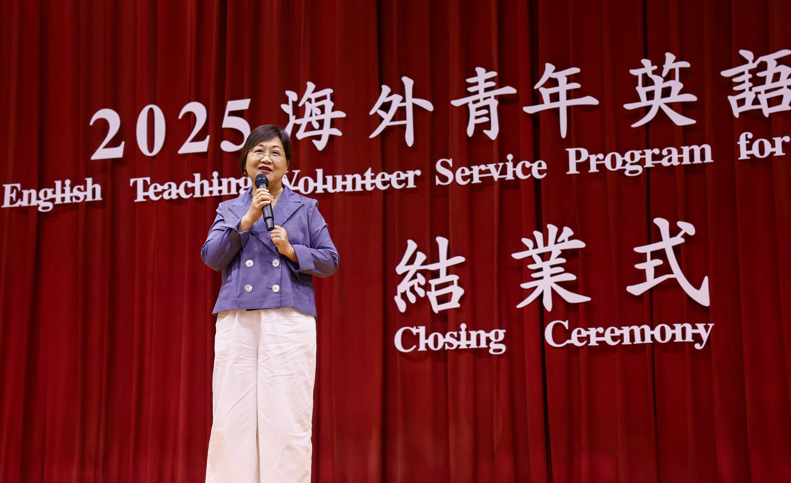
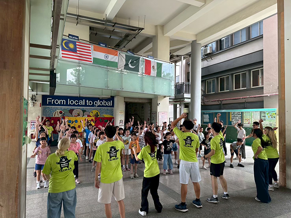
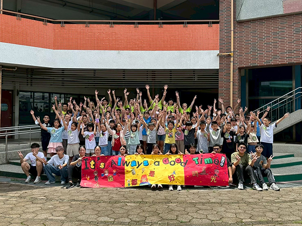
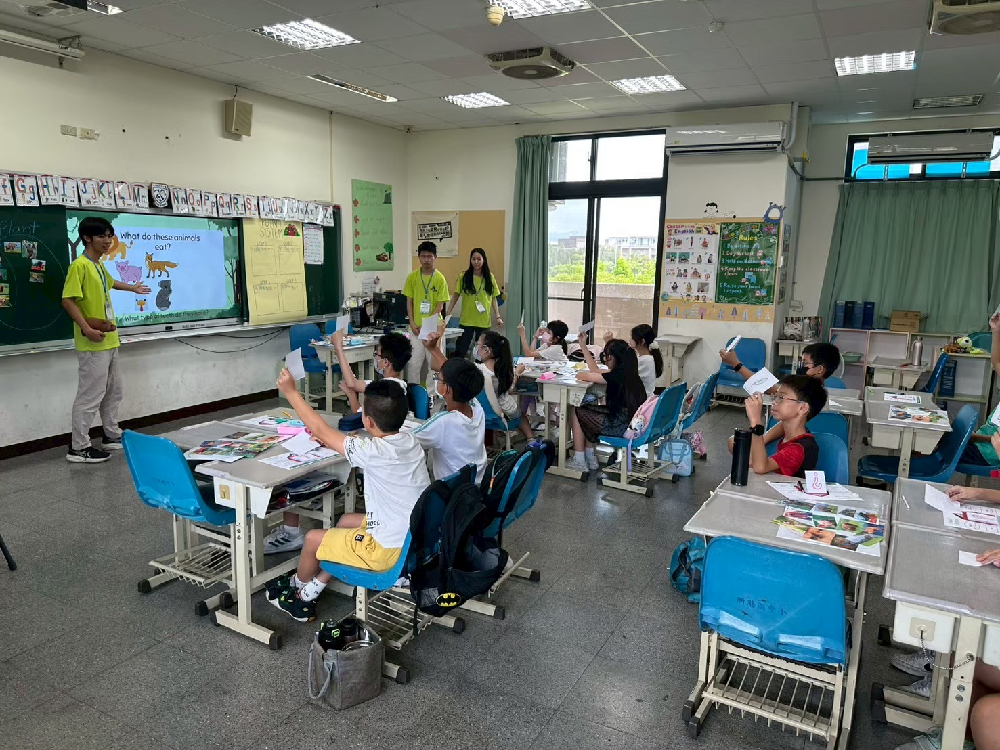
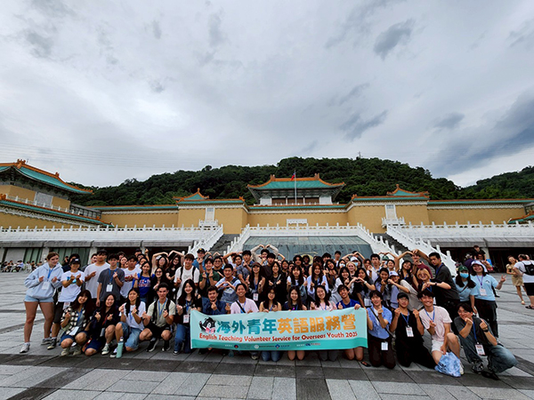
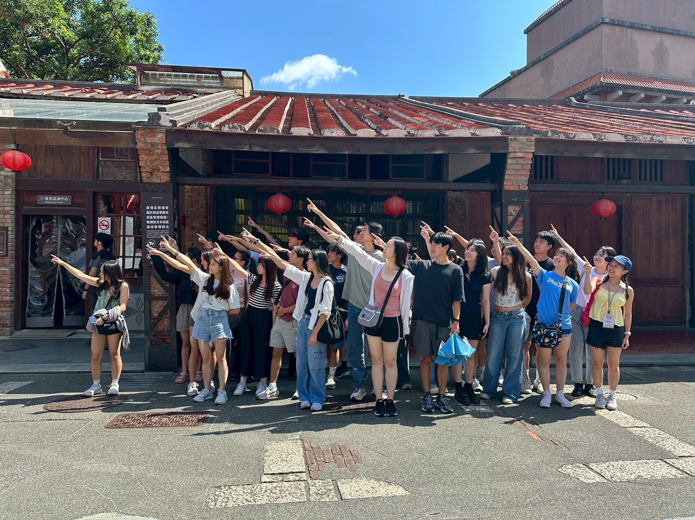
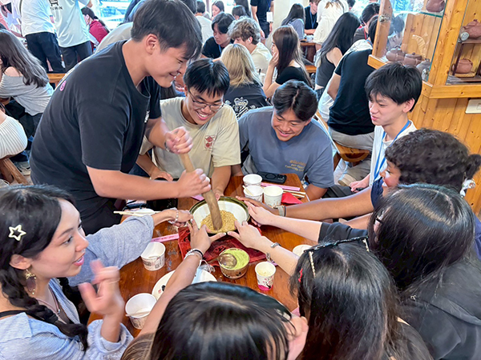

最新消息
敬請期待
活動簡介
僑委會為使海外青年活動與時俱進，落實推動國際志工服務精神，鼓勵海外志工投入國內英語教學活動，2004年起與金車教育基金會合作辦理「尋找ABC史懷哲－海外華裔青年暑期返鄉英語教學志願服務」，邀請有服務意願之海外僑青來臺服務。
鑑於運用海外資源來臺投入志願服務活動，深具正面意義，並可配合政府雙語政府及人才培育計畫，鼓勵海外僑青投入國內英語教學活動，提昇偏遠或教學資源缺乏地區國小、國中學生及弱勢族群學習英語機會，本會與教育部於2006年共同規劃辦理「海外青年英語服務營」，活動為期4週，第1週教育訓練，第2、3週到校進行英語教學、第4週寶島參訪，由本會負責招募海外僑青來臺，教育部則負責志工教育訓練及在校英語教學服務。因辦理成效良好，逐年擴大辦理規模，2014年起並邀請客家委員會及民間NGO單位參與辦理，2016年原住民族委員會亦加入辦理行列。
「2025年海外青年英語服務營」於114年7月5日至8月1日辦理，計有來自美國、加拿大、英國、澳洲、南非、義大利、法國、新加坡等22個國家共415名海外志工(包括臺灣華語文學習中心TCML及海外主流學校學生)至國內68所國、中小學服務(教育部64校、客委會4校)，國內有3,026名學童受益。截至目前計有超過7,000名海外志工來臺參加，國內計有逾50,000名學童受惠。
本項活動成效卓著，廣受海內外好評，除成功引導海外青年投入臺灣志願服務外，亦使海外青年更貼近臺灣，與臺灣產生情感聯繫，達成促進國際青年交流、縮小國內城鄉差距、提升國內學童英語學習動機及創新僑教服務等多重目標。
活動影音







